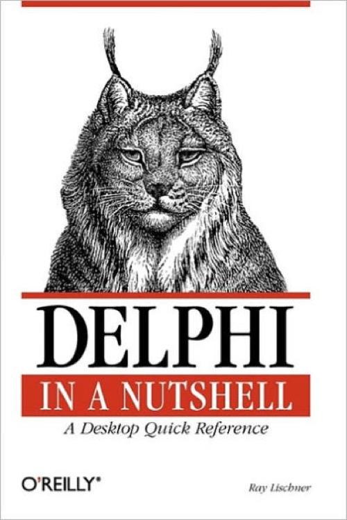

Delphi in a nutshell
Published by : O'Reilly
Writed by : Ray Lischner
Published date : 04/04/2000
ISBN-10 : 1565926595
ISBN-13 : 9781565926592
Language :  English
English
Web site : http://www.tempest-sw.com/nutshell/
About Delphi in a nutshell
With a new name and a new focus on CORBA, database drivers, and Microsoft Back Office applications, Inprise/Borland Delphi is enjoying a resurgence, with a growing user base of programmers who use Delphi for rapid development of enterprise computing applications. Not to rest on success, the latest version of Delphi, Version 5, includes further expansion and refinement of the 3-tier application framework introduced in Delphi 4 and has resulted in a prize-winning product.Delphi in a Nutshell is the first concise reference to Borland/Inprise Delphi available. It succinctly collects all the information you need in one easy-to-use, complete, and accurate volume that goes beyond the product documentation itself.Delphi in a Nutshell starts with the Delphi object model and how to use RTTI (Run Time Type Information) for efficient programming. The rest of the book is the most complete Delphi Pascal language reference available in print, detailing every language element with complete syntax, examples, and methods for use. The book concludes with a look at the compiler, discussing compiler directives in depth.
Where to buy ?
This book has the ISBN13 "9781565926592".
If it is still available for sale, you can order it in your favorite bookstore, by its publisher or online at
Amazon CA,
Amazon FR,
Amazon JP,
Amazon UK or
Amazon USA depending on your country.
Table of content
Chapter 1, Delphi Pascal, discusses the differences between Delphi Pascal and standard Pascal. If you have used Turbo Pascal or other variants of Object Pascal, you should give Chapter 1 a quick read to learn about the new features that are unique to Delphi Pascal.
Chapter 2, The Delphi Object Model, discusses classes and objects in greater depth. If you have used other variants of Object Pascal, you must read this chapter because Delphi's object model is quite different. If you have experience with other object-oriented programming languages, read Chapter 2 to learn the differences between Delphi and other languages, such as Java and C++.
Chapter 3, Runtime Type Information, covers the key to Delphi's integrated development environment. RTTI is not documented in Borland's official help files, but anyone writing or using components (that is, every Delphi programmer) should understand the nature of RTTI, including its limitations and proper uses. Chapter 3 tells you everything there is no know about RTTI, and then some.
Chapter 4, Concurrent Programming, is about using Delphi in a modern, multi-threaded, multi-processor world. Delphi includes several language features to help you write multi-threaded applications, but these features can be difficult to use if you do not have much experience with the tricks and traps of multi-threaded programming. This chapter gets you started using Delphi effectively to write modern applications.
Chapter 5, Language Reference, is the bulk of the book. The alphabetical reference lists every keyword, directive, subroutine, type, and variable in the Delphi Pascal language and its System unit. Full examples show you how to use the language correctly and effectively.
Chapter 6, System Constants, contains tables of related constants. Chapter 5 is large enough without adding these literals. By moving them to a separate chapter, the reference is easier to use.
Chapter 7, Operators, describes all the arithmetic and other operators in Delphi Pascal. Symbols do not alphabetize well, so listing the symbol operators in their own chapter makes it easier to find information about a particular operator.
Chapter 8, Compiler Directives, lists all the special comments that you can include in your source code to control how Delphi compiles and links your program.
Appendix A, Command Line Tools, tells you the usage and options for the various command line tools that come with Delphi. These tools are not related to the Delphi Pascal language, but they are often overlooked and can be extremely useful for the Delphi professional.
Appendix B, The SysUtils Unit, lists all the subroutines, types, and variables in the SysUtils unit. This unit is not built into the compiler (as the System unit is). It is not part of the Delphi Pascal language but is part of Delphi's runtime library. Nonetheless, many Delphi professionals have come to rely on SysUtils as though it were part of the language, and indeed, many subroutines in SysUtils are superior to their equivalents in the System unit (such as AnsiPos instead of Pos).